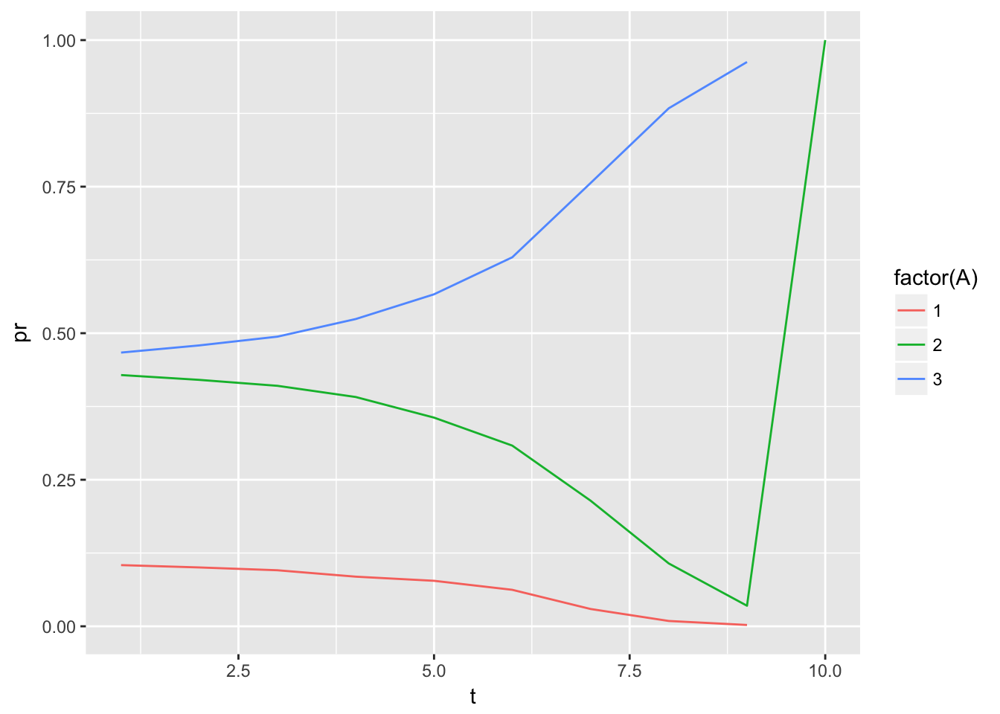
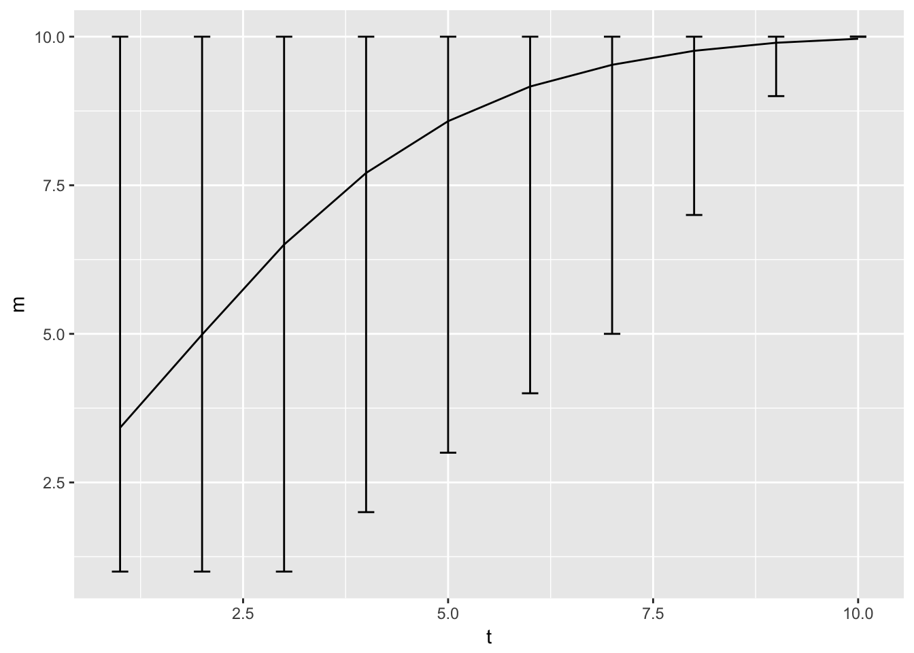

Let’s consider a simple dynamic programing problem. In this problem set we want to simulate from a single agent problem and use the Hotz and Miller approach to recover the parameters.
Let’s use a very simple model that we can solve exactly. The state space will be discrete, we will consider a two sector problem and staying at thome. We will use Rust assumptions. For simplicity we consider only 10 years.
We consider the following preferences:
\[ U(w,a) = \frac{w^{1-\rho}-1}{1-\rho} + \xi_{it}(a)\] and we consider the following wage equation:
\[ \log(w_{it}(a)) = \beta_a X_{it} + \epsilon_{it}(a) \]
As we know we can solve for the expected value function given by:
\[ \bar{V}_t(x) = \log \sum_a \exp( E U(w,a) + \beta \bar{V}_t(x_{t+1})) \] Let’s assume log-normal shocks for the wage, and get \(E(U) = exp(\rho \sigma_\epsilon^2/2) * w^\sigma\).
We prepare the wage realizations in each state and the value function.
p = list(nt=10,ne=10,beta=5,rho=2,wsd=1,
r1=0.1,r2=0,rt=0.05,u0=-2,u1=0.5,u2=0.25,
r=0.02,b=0.5)
V = array(0,c(p$nt,p$ne))
# prepare simple matrices for E1 and E2
E = 1:p$ne
# construct transition matrix for each choice
trm <- function(d,s,n) {
X1 = spread(qnorm( (1:n)/(n+1) ),1,n)
D = dnorm( X1 - (t(X1) +d),0,s)
D = D / spread(rowSums(D),2,n)
}
GG = array(0,c(3,p$ne,p$ne))
GG[1,,] = trm(-0.2,0.2,p$ne) # depreciates
GG[2,,] = trm(0 ,0.2,p$ne) # accumulates
GG[3,,] = trm(1 ,0.2,p$ne) # accumulates faster
# define utility function
uf <- function(w,p) (w^(1-p$rho))/(1-p$rho)We then solve the dynamic problem recursively. In the last period they just get the last wage for ever.
S = exp( p$wsd^2 * (1-p$rho)^2/2)
QQa = array(0,c(p$nt,p$ne,3))
Vf = cbind( p$u0 , uf(p$r1 * E + p$rt*p$nt ,p) +p$u1, uf(p$r2 * E + p$rt*p$nt ,p) + p$u2)/p$r
V[p$nt,] = log( rowSums(exp(Vf)))
QQa[p$nt,,] = VfWe then solve the values recursively
# construct Q value for each choice of the 3 choices
for (t in (p$nt-1):1) {
Q0 = p$u0 + 1/(1+p$r)* GG[1,,] %*% V[t+1,]
Q1 = uf(p$r1 * E + p$rt*p$nt ,p) + p$u1 + 1/(1+p$r)* GG[2,,] %*% V[t+1,]
Q2 = uf(p$r2 * E + p$rt*p$nt ,p) + p$u2 + 1/(1+p$r)* GG[3,,] %*% V[t+1,]
QQ = cbind(Q0,Q1,Q2)
V[t,] = log(rowSums(exp(QQ)))
# saving the choice probability
QQa[t,,] = QQ
}then we simulate a data set
N=50000
simdata = data.table(ii=1:N)
R = c(0,p$r1,p$r2)
dE = 1:10
dW = 1:10
dA = 1:10
simdata = simdata[,{
dE[1] = sample.int(p$ne,1,prob=1/(1:p$ne))
for (t in 1:p$nt) {
pr = exp(QQa[t,dE[1],] - max(QQa[t,dE[1],]))
dA[t] = sample.int(3,1,prob= exp(QQa[t,dE[1],]))
dW[t] = exp(R[dA[t]] * dE[t] + p$rt*t + p$wsd*rnorm(1))
if (dA[t]==1) dW[t]=NA;
if (t<p$nt) {dE[t+1] = sample.int(p$ne,1,prob=GG[dA[t],dE[t],])}
}
list(A=dA,W=dW,E=dE,t=1:p$nt)
},ii]
rr = simdata[,.N,list(A,t)][,pr:=N/sum(N),t]
ggplot(rr,aes(x=t,y=pr,color=factor(A))) + geom_line()
rr = simdata[,list(m=mean(E),q975=quantile(E,0.975),q025=quantile(E,0.025)),t]
ggplot(rr,aes(x=t,y=m,ymin=q025,ymax=q975)) + geom_line() + geom_errorbar(width=0.2)
We want to apply the Hotz and Miller approach to estimate this dynamic programing problem.
Q1 Show that you can recover direclty the parameter of the wage equation in this problem. Write the regression code that recovers them. Q2 The risk aversion coefficient does not enter linearly in the utility problem. We are going to fix it, and use Hotz and Miller conditional on that value. So Assume that \(\rho\) is known.
Q3 Evaluate the previous problem at a grid for \(\rho\) and plot the result.